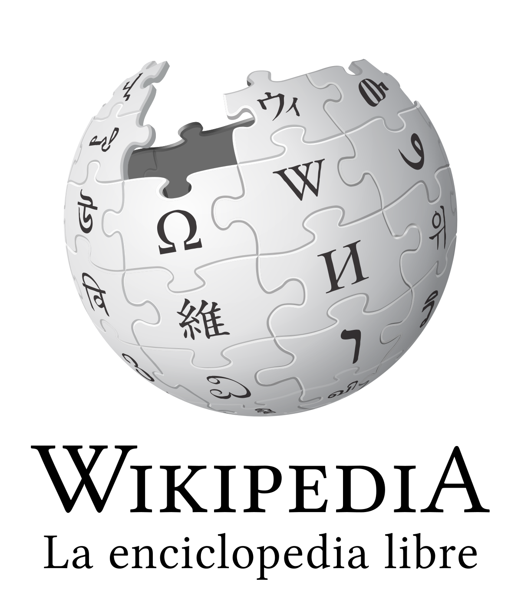

Enllaços interesants
|
Esta es la pagina oficial de nintendo, aqui podemos encontrar informacion sobre nuevos juegos, consolas y sobre todo de super mario! |
|
|  |
Esta es la pagina de wikipedia donde podemos encontrar un monton de información de super mario! |
 |
Esta es la pagina oficial de super mario, donde podemos encontrar un monton de cosas chulas! |
|
En esta pagina podemos jugar al mitico juego de super mario totalmente gratis y sin ningun tipo de fallo, hasta donde conseguiras llegar? |